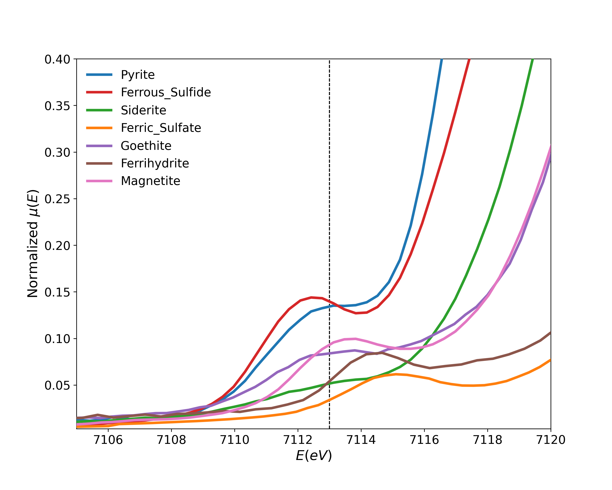
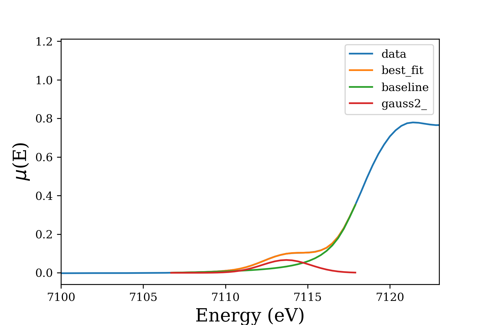

I started my postdoctoral work at the University of Saskatchewan by analyzing previously collected data from the SXRMB beamline at the Canadian Light Source (CLS). The data included standards and real samples with both Fe and S K-edge XAS measurements. Using Linear Combination Fitting (LCF), one can determine what standards constitute the measured samples. Fe-XAS has an interesting pre-edge feature that can give a lot of information on the coordination environment of Fe atoms.
Fitting this pre-edge feature allows determining the Fe(II)/Fe(III) ratio:
